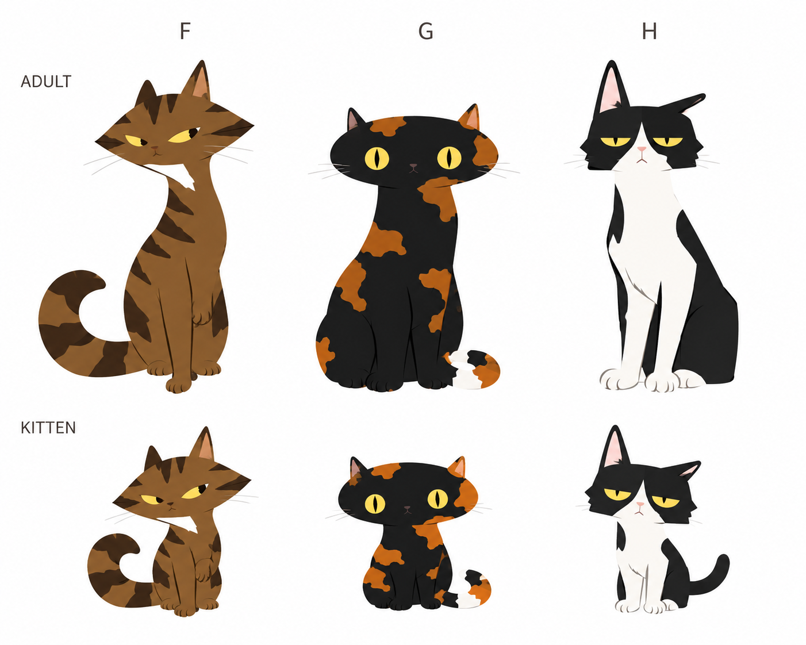

SVG試作：パーツを組み替えて動かす →
猫らしい癖を加える
F / G / H — 顔とシルエットの個性
F：すました、きつね顔寄り ／ G：とぼけた、横長の顔 ／ H：ぶすっとした、飄々とした顔。上段は成猫、下段は子猫。今回は癖の方向を見るため少し強めに振っています。

前回の候補 D / E
参考に合わせて、毛の描き込みや立体感を抑えた方向に変更。上段：成猫 ／ 下段：子猫。中央は錆柄の体＋三毛の尾、右は尾なし・短尾の例です。方向性確認用の画像で、実装用パーツへの分離は次の工程です。
以前の候補 A / B / C